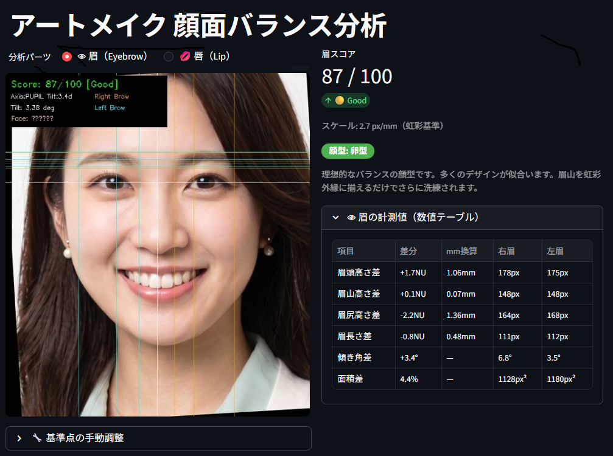
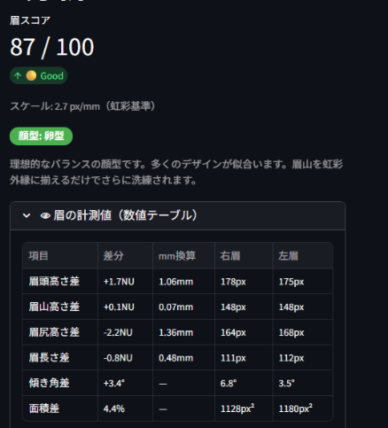
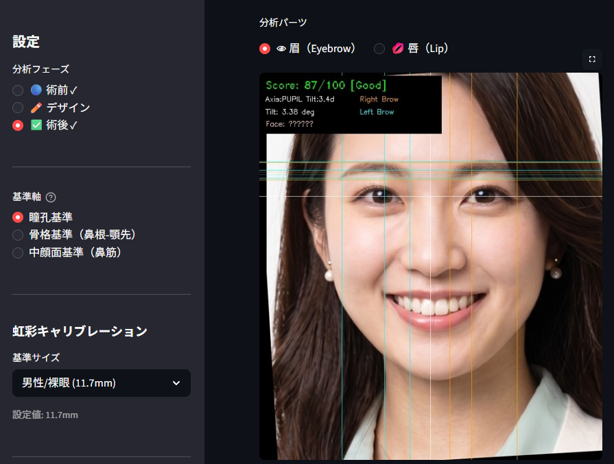
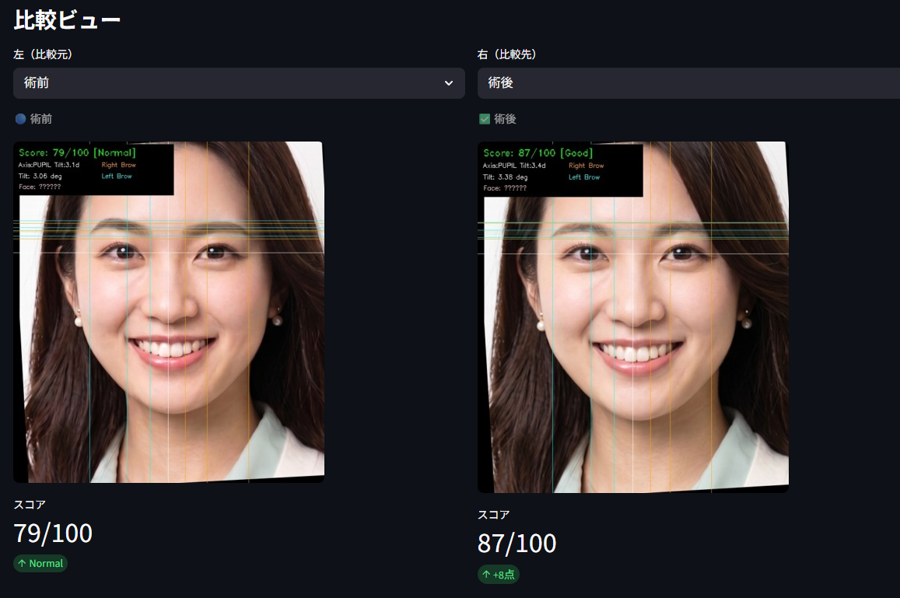

MediaPipe搭載のAIが顔面468点を解析し、眉の左右差を0.1mm単位で数値化。
「勘と経験」をデジタルがサポートし、
「感覚のデザイン」を「数値のエビデンス」に変える
アートメイク専用SaaSです。

どれだけ腕の立つアーティストでも、「言葉」だけでは不安は消えない。
数値とビジュアルで示して、はじめて患者さんの表情が変わる。
アーティストの卓越したセンスに頼ってきたアートメイク業界。その主観的な美しさは、患者との認識のズレや技術継承の壁、そして経営リスクを生み続けています。
「綺麗になります」という言葉だけでは、患者さんの『本当に大丈夫かな…』という心の声は消えません。左右差への不安を数値で示せないことが、高単価プランへの成約を阻んでいます。
利き目や見る角度によって、同じ顔でも左右差の評価がブレます。ベテランでさえ「感覚」に頼らざるを得ず、その誤差が施術後の認識のズレを生む原因になっています。
ベテランの「感覚」を新人に伝える術がなく、デビューまで平均12ヶ月かかります。スキルの差がサービス品質のバラツキを生み、クリニックのブランドを傷つけます。
施術直後は満足でも、定着後の色素変化や表情筋の非対称でズレが生じることも。施術前の数値記録がなければ、適切な施術を証明できません。
美容医療の品質基準が世界的に高まる中、日本のアートメイク業界も新たなターニングポイントを迎えています。
美容医療全般で医療ADRが増加。定着後のトラブル時に「適切な施術を行った証拠」が求められるようになっています。
関連データ: 美容医療トラブル相談件数
前年比 +47%（厚労省）
「黄金比」「骨格診断」の知識を持つ患者が増加。感覚だけでの説明では満足しない時代へシフトしています。
関連データ: SNSでの「アートメイク失敗」検索数
前年比 +180%
韓国・台湾のアートメイク大手は既にAI顔面分析を導入。日本市場での品質格差は加速度的に広がっています。
関連データ: 韓国のAI顔面解析ツール導入院数
920院以上
このような市場変化の中で、「感覚」を「数値」に変えるツールは、もはや差別化ではなく、必須インフラになりつつあります。
MediaPipeによる顔面468点の特徴点抽出。黄金比と解剖学的配置をAIが学習し、瞳孔・骨格・中顔面の3軸モードで解析します。

瞳孔間距離を基準とした独自スケールで、眉頭・眉山・眉尻の高さ差、角度差、長さ差、面積差を7指標で同時計測。スコアを100点満点で可視化し、患者への説明ツールとしても機能します。
写真をアップロードするだけで解析完了。術前・デザイン・術後の3フェーズを同一条件で比較管理します。

「術前・デザイン後・術後」の3フェーズを並べて比較するビューで、施術の精度改善を可視化。定着状態に合わせた最適なリタッチ時期を自動算出し、リピート率を高めます。
全施術の平均スコアを集計し、アーティストごとのスキルを定量化。クリニック全体の品質を可視化・標準化します。
ベテランの「感覚」をデータに変換し、新人教育に活用。AIが苦手部位（例：左眉尻）を自動特定し、効率的な練習プランを提案します。スタッフ間の技術格差を数値で把握できるため、公平な評価制度の設計にも貢献します。
「ツール導入」ではなく、「経営指標の改善」として捉えてください。FaceBalance AIは3つのKPIに直接貢献します。
「0.5mmのズレがあります、こう修正します」と数値で示した瞬間、患者の納得感が生まれます。カウンセリング時間が短縮され、高単価プランへの移行率が高まります。
導入院実績: 32% → 48%（+50%）AIが練習結果を客観的に採点。「どこが悪いか」を数値で示すことで感覚的な指導から脱却。スコアをもとにした具体的な改善指示が成長を加速します。
デビューまで: 12ヶ月 → 4ヶ月術前の詳細な数値記録は、定着後トラブル発生時の「適切な施術を行った証明」になります。医療ADR増加の時代に、クリニックを守る保険になります。
アートメイクは、人の顔に向き合う繊細な仕事です。
どれだけ精密なAIがあっても、施術するのは人間であり、患者さんの表情を読んで寄り添うのも人間です。
FaceBalance AIが目指しているのは、アーティストの「勘と経験」を数値として可視化し、その技術を証明できる世界です。
長年かけて磨いてきた審美眼を、AIが「価値あるエビデンス」に変える。それがこのツールの本質です。
「職人の感覚をデジタルがサポートする。
それが美容医療の可視化革命だと、私たちは信じています。」

術前・術後を同じ条件で解析することで、改善の度合いを数値で証明できます。患者さんへの説明が変わり、次回施術への信頼につながります。
「AIが『右眉山を1.2mm上げることでスコア91点を実現可能』と提案してくれる。施術のゴールが明確になった。」
実際に現場で使われているからこそ生まれる、リアルな成果と声をご紹介します。
アーティスト / マネージャー（東京・半蔵門）
高単価プラン成約率: 32% → 48%（+50%）
院長
新人デビュー期間: 12ヶ月 → 4ヶ月（-67%）
まずはAI分析機能だけで即日導入可能。CRM・評価機能は先行予約受付中です。
FaceBalance AIはアートメイクを起点に、美容医療全体の「数値化された品質基準」となることを目指しています。
2026年内予定
2027年
長期ビジョン
本サービスは「ただの管理ツール」ではなく、日本の医療アートメイクの品質を世界基準へ引き上げるための「共通言語」を目指しています。